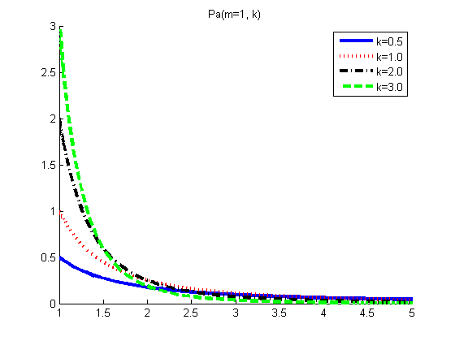
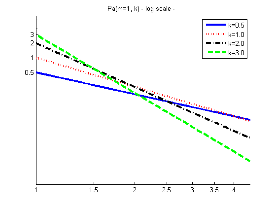

Plot the pareto distribution
Contents
figure; hold on;
k = [0.5 1 2 3];
[styles, colors] = plotColors();
xs = 0.9:0.05:5;
model.m = 1;
nk = length(k);
legendStr = cell(1, nk);
for i=1:nk
model.K = k(i);
p = exp(paretoLogprob(model, xs));
plot(xs, p, styles{i}, 'color', colors(i), 'linewidth', 3);
legendStr{i} = sprintf('%s=%2.1f', 'k', k(i));
end
legend(legendStr)
title('Pa(m=1, k)')
set(gca, 'xlim', [1 5]);
printPmtkFigure pareto-pdf;

Plot on a log log scale
copyobj(gca, figure());
set(gca, 'xscale', 'log', 'yscale', 'log');
axis(exp([0 1.5 -6 2]));
set(gca, 'XTick', 1:0.5:5);
set(gca, 'YTick', [0 0.5 1 2 3]);
legend(legendStr)
title('Pa(m=1, k) - log scale - ')
printPmtkFigure pareto-log-pdf;
